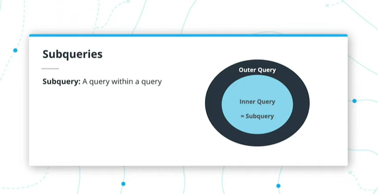
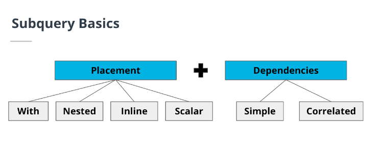

Sub queries and Temp tables
Subquery: a query that runs within an outer query

SELECT product_id,
name,
price
FROM db.product
Where price > (SELECT AVG(price) FROM db.product) -- right part is subquery
When do you need a subquery?
- manipulating an existing table to "pseudo-create" a table which is used as part of a larger query
Example of when to use subqueries
- Identify the top-selling Amazon products in months where sales have exceeded $1m
- Existing Table: Amazon daily sales
- Subquery Aggregation: Daily to Monthly
- Examine the average price of a brand’s products for the highest-grossing brands
- Existing Table: Product pricing data across all retailers
- Subquery Aggregation: Individual to Average
- Order the annual salary of employees that are working less than 150 hours a month
- Existing Table: Daily time-table of employees
- Subquery Aggregation: Daily to Monthly
Subqueries VS JOINs
| Factor | Subquery | Join |
|---|---|---|
| Use cases | When an existing table needs to be manipulated or aggregated to then be joined to a larger table. | A fully flexible and discretionary use case where a user wants to bring two or more tables together and select and filter as needed. |
| Syntax | A subquery is a query within a query. The syntax, as a result, has multiple SELECT and FROM clauses. | A join is simple stitching together multiple tables with a common key or column. A join clause cannot stand and be run independently |
| Dependencies | A subquery clause can be run completely independently. When trying to debug code, subqueries are often run independently to pressure test results before running the larger query. | A join clause cannot stand and be run independently. |
| Output | Both subqueries and joins are essentially bringing multiple tables together (whether an existing table is first manipulated or not) to generate a single output. | Same as previous cell to the left |
| Deep Dive Topics | What happens under the hood: Query plans are similar for both subqueries and joins, read this link | Same as previous cell to the left |
Subquery Basics

- Must be fully placed inside paranthesis
- Must be fully independent and can be executed on their own (except Correlated subqueries)
- Two components of subqueries
- Placement - Where it is placed
- With
- also known as a common table expression (CTE)
- allows you to define a temporary named result set that can be referenced multiple times within a larger query
- common use case is to simplify complex queries or create a temp table with limited rows to improve performance
WITH top_paid_employees AS ( SELECT employee_id, first_name, last_name, salary FROM employees ORDER BY salary DESC LIMIT 10 ) SELECT e.employee_id, e.first_name, e.last_name, e.department_id, tpe.salary FROM employees e JOIN top_paid_employees tpe ON e.employee_id = tpe.employee_id;
- Nested
- A nested subquery is a subquery that is embedded within another subquery or the main query
SELECT department_name FROM departments d WHERE department_id IN ( SELECT department_id FROM employees GROUP BY department_id HAVING COUNT(*) > 5 );
- A nested subquery is a subquery that is embedded within another subquery or the main query
- Inline
- This subquery is used in the same fashion as the WITH use case above. However, instead of the temporary table sitting on top of the larger query, it’s embedded within the from clause.
SELECT student_name FROM (SELECT student_id, student_name, grade FROM student WHERE teacher =10) WHERE grade >80;
- This subquery is used in the same fashion as the WITH use case above. However, instead of the temporary table sitting on top of the larger query, it’s embedded within the from clause.
- Scalar
- A scalar subquery is a subquery that returns a single value, which can be used as part of an expression in the main query
SELECT employee_id, first_name, last_name, salary, (SELECT MIN(salary) FROM employees) AS min_salary FROM employees;
- A scalar subquery is a subquery that returns a single value, which can be used as part of an expression in the main query
- With
- Dependencies - with the outer/larger query
- Simple - The inner subquery is completely independent of the larger query.
- example 1
WITH dept_average AS (SELECT dept, AVG(salary) AS avg_dept_salary FROM employee GROUP BY employee.dept ) SELECT E.eid, E.ename, D.avg_dept_salary FROM employee E JOIN dept.average D ON E.dept = D.dept WHERE E.salary > D.avg_dept_salary - Correlated - The inner subquery is dependent on the larger query.
- example 1
SELECT employee_id, name FROM employees_db emp WHERE salary > (SELECT AVG(salary) FROM employees_db WHERE department = emp.department ); - example 1 (pretty sure you can do this with a groupby)
SELECT first_name, last_name, ( SELECT AVG(GPA) FROM outer_db WHERE university = outer_db.university) GPA, university FROM student_db outer_db; - example 2
SELECT first_name, last_name, GPA, university FROM student_db outer_db WHERE GPA > (SELECT AVG(GPA) FROM student_db WHERE university = outer_db.university);
- Placement - Where it is placed